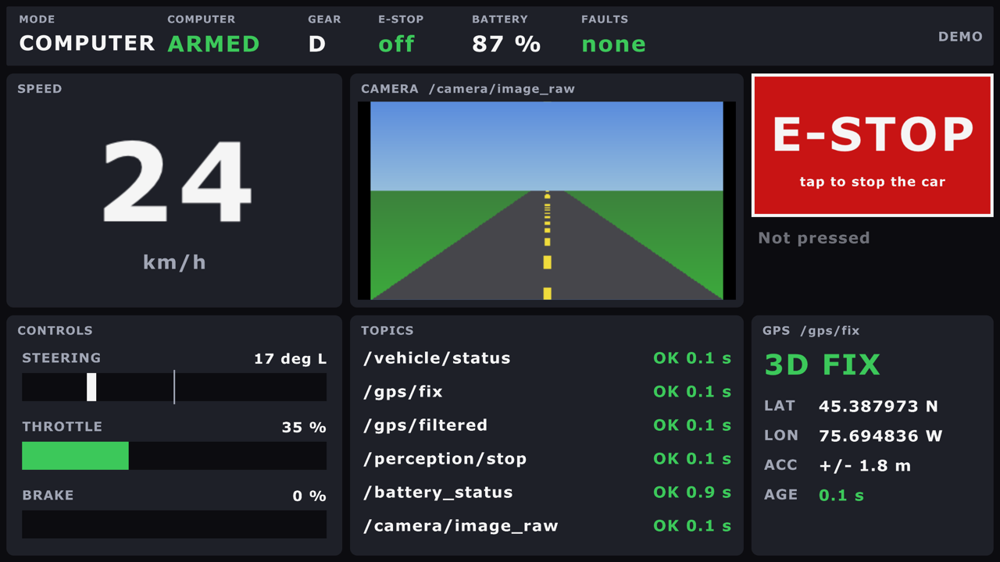

The 2025-26 team built a touchscreen app for the car. Its back end, aav_hud, is ported
to our topics (10 October). The app now matches it (11 October): an e-stop button, the
car's status, and the camera from the back end.
Decided 11 October (Ben): the HUD becomes one Rust program, raylib and rclrs, that is also its ROS node. Its first screen runs since 15 October: the HUD in Rust. The Flutter app stays until the new one matches it. Still open (Q29): which screen, and GPS destinations this year.
The HUD in Rust (raylib)
src/hud/aav_hud_raylib: one window, which is also the ROS node hud.

| Panel | Shows |
|---|---|
| Top strip | mode, armed, gear (D/R/P), e-stop on/off, battery, faults |
| Speed | km/h, big. Grey with "OLD" when /vehicle/status stops |
| Controls | steering (left of centre = left), throttle, brake |
| Camera | the picture (rgb8, bgr8, rgba8, bgra8, mono8); a STOP SIGN banner over it |
| E-STOP | the button: /safety/estop true 5 times, 0.1 s apart. Never false. Says whether anything heard it |
| Topics | every topic it listens to: OK, STALE (quiet for 1 s) or NEVER, and how long ago |
| GPS | is there GPS data? NO GPS DATA, GPS SILENT, or the fix: NO FIX, 2D, 3D, DGPS, RTK FLOAT, RTK FIXED. Then lat, lon, accuracy, age |
Run it
pixi run hud-demo # pretend data: no ROS, no car, any Mac
pixi run build && pixi run hud # the real node (ros2 launch aav_hud_raylib hud.launch.py)
pixi run hud fullscreen:=true # full screen; F11 switches tooWithout Pixi: cargo run -p hud-app --no-default-features -- --demo, in
src/hud/aav_hud_raylib. The first build compiles raylib (cmake, about a minute).
How it's built
| Part | What it does |
|---|---|
crates/hud-core |
the logic, no ROS, no raylib: state, GPS kinds, OK/STALE/NEVER, the e-stop burst. cargo test -p hud-core (in tools/test.sh) |
crates/hud-app |
the window (raylib, main thread) and the node (rclrs, its own thread, news over a channel). --demo swaps the node for pretend data |
config/hud.yaml |
every topic name, the only place they're written. Rename one there, or --ros-args -p gps_topic:=/x |
- The GPS panel reads
/sensors/gps/fix, the receiver itself, not/localization/gps/fix: it answers "does the GPS work?". navsat_transform marks every/localization/gps/fixmessage as RTK. - NavSatFix can't tell RTK float from fixed. The HUD calls it fixed at 5 cm or better.
- Not in
car.launch.pyyet. On Linux without X11's headers, colcon skips it with a warning.
Tested (15 October, a Mac)
| What | Result |
|---|---|
--demo, in a window and full screen |
draws; screenshots checked |
The node, with ros2 topic pub and image_publisher (private domain) |
speed, faults, RTK FIXED, 2D FIX, STOP SIGN and the camera picture shown |
Next to bench mode (bench.launch.py nav:=false, private domain) |
every bench topic OK: status, GPS 3D fix, battery 100 %, the bench camera. /perception/stop_sign NEVER (perception is off there) |
One press, through the real node, to another node (cargo test) |
exactly 5 trues, no false, each "sent to 1 node" |
Ctrl-C to ros2 launch |
the window closes, "finished cleanly" |
| A click on the window's button | not tested: macOS blocks clicks from scripts |
The Flutter app (2025-26): what it is
Three programs that run together on the UI Raspberry Pi (Ubuntu 22.04 in 2025-26, two 800x480 screens):
| Part | Where | What it does |
|---|---|---|
| Front end | hud/flutter_pi/ (Flutter/Dart) |
Screens: home (e-stop button, status strip, speed, stop-sign alert), map with destination search, camera page. Talks to the back end over Socket.IO and HTTP. |
| Back end | src/hud/aav_hud/ (ROS 2 Python node + Flask) |
hud_server: reads the car's topics and pushes them to the app (port 5000); sends a locked route to Nav2; publishes the e-stop button's /safety/estop. |
| Routing | OSRM in Docker (hud/scripts/osrm_bootup.sh) |
Offline road routing for Ontario on port 5001. The map data file (ontario-*.osrm) was on the Pi, not in git. |
The map page also needs a tile server on port 8080 (/styles/basic-preview/). It isn't
in git either.
What the back end reads and sends
| Name | Type | Use |
|---|---|---|
/vehicle/status |
aav_interfaces/msg/VehicleStatus |
reads: speed, mode, armed, e-stop, gear, faults |
/localization/gps/fix |
sensor_msgs/msg/NavSatFix |
reads: the car on the map (gps_topic:=/sensors/gps/fix for the raw fix) |
/perception/stop_sign |
std_msgs/msg/Bool |
reads: the stop-sign alert |
/vehicle/battery |
sensor_msgs/msg/BatteryState |
reads: volts, charge, amps |
/sensors/camera/front_left/image_raw |
sensor_msgs/msg/Image |
reads, only while someone watches the camera page |
/safety/estop |
std_msgs/msg/Bool |
publishes: only true, when the e-stop button is pressed |
/follow_gps_waypoints |
nav2_msgs/action/FollowGPSWaypoints |
sends the locked route as GPS waypoints, and shows Nav2's progress |
The e-stop button
This is the software e-stop. The car's red e-stop button is separate: nothing here touches it.
- Big and red, on the home screen. One tap sends
POST /estop. - The back end publishes
/safety/estoptrue at once, then 4 more times, 0.1 s apart. - Reliable, depth 10: what spine_bridge and legacy_uart_bridge subscribe with. twist_mux takes it too.
- The press also cancels the HUD's route, so clearing the e-stop doesn't restart the trip.
- The HUD never clears it. Clearing stays a person's deliberate act, from a laptop:
pixi run estop-clear, or Foxglove. - No answer, or nothing subscribes to
/safety/estop: the app shows a red message, "E-STOP FAILED ... Press the car's red e-stop button."
Socket.IO events and web routes
| Event | Carries |
|---|---|
speed |
speed: m/s from /vehicle/status, negative in reverse |
position |
latitude, longitude |
stop_sign |
detected, message; sent when it changes |
nav_state |
distance, status, the waypoint number and a message |
vehicle_status |
mode, armed, e-stop, gear, steering, throttle, brake, faults |
battery |
voltage (V), percentage (0-100), current (A); null when not measured |
The app's names are in lib/components/sockets/hud_events.dart, the back end's in
events.py. A test checks that the two lists match.
| Route | Does |
|---|---|
POST /receive |
takes the app's route, and starts the Nav2 goal. 400 for a bad route, 503 when Nav2 isn't running |
POST /cancel |
cancels the goal: the map page's Unlock and Clear. 409 when no route is followed |
POST /estop |
publishes /safety/estop true. It can't clear it. 503 when nothing subscribes |
GET /camera/latest.png |
the newest camera picture: the camera page. 503 when none is newer than 2 s |
GET /camera/stream |
the same, as a stream of pictures: open it in a browser |
GET / |
the latest copy of every event, as JSON |
What changed in the app (11 October)
| Change | Where |
|---|---|
| An e-stop button, and a red message when it fails | home screen |
| A strip: e-stop, armed, mode, gear, battery, faults. Empty when the back end is lost | home screen, top |
Unlock and Clear cancel the route (POST /cancel) |
map page |
| Lock Route sends at once: the two 3 s debug delays are gone | map page |
The camera page shows /camera/latest.png, 5 a second, and says "Not live" when it stops |
camera page |
| The events' real names, in the app and the back end together | both |
| "© OpenStreetMap contributors" under the map and the search results | map page |
| Socket.IO over WebSocket only. With polling first, it never connected | all screens |
| No WebRTC package. No package was added | pubspec.yaml |
Every changed file is listed in hud/flutter_pi/PROVENANCE.md.
Get Flutter
conda-forge has no Flutter, so Pixi can't install it. A task downloads it instead:
pixi run get-flutter # Flutter 3.35.7 into vendor/flutter/ (about 4.3 GB)
pixi run get-hud-map # the place database (below)| Version | 3.35.7 (Dart 3.9.2), the last 3.35. pubspec.lock needs Flutter 3.35+ and Dart 3.9+; 3.38 and newer pin other package versions, so they would rewrite it |
| Computers | macOS (Apple silicon, Intel) and Linux x64. Flutter publishes no SDK archive for Linux arm64 (the Pis, the Orin) |
| Checked | by the SHA-256 in Flutter's releases JSON (pinned in tools/get_flutter.sh), and by its git commit |
| Analytics | off, without changing your own settings |
Kept in vendor/flutter |
the pub cache, Flutter's settings, the analyzer's state |
| Still outside the repo | ~/.flutter (an empty file); on a Mac, ~/Library/Caches/flutter_engine/ (empty folders) |
pixi run flutter <args> runs any Flutter command in hud/flutter_pi, with the same
settings.
Test the app
pixi run hud-test # flutter pub get, analyze and test: offline
pixi run test # everything; includes hud-test when vendor/flutter exists- 19 tests: the e-stop request, the status strip, the camera page, Clear, the events.
- Then the app's own client code against the back end's real web server, with a fake
car behind it (
tools/hud_fake_backend.py, no ROS). It must connect, get the car's status and a picture, and see the e-stop it presses. flutter analyze: no errors, no warnings, 7 infos, all in the 2025-26 map page.- Without Flutter,
pixi run testprints "skipped" for the app. - The back end has 98 tests of its own;
pixi run testruns them too.
Run it
pixi run bench hud:=true hud_port:=5123 # the back end, with the bench car
ros2 launch aav_hud hud.launch.py # the back end alone, next to a profile- It listens on 127.0.0.1 only, by default: a locked route moves the car, so only the
HUD's own computer can send one.
hud_host:=0.0.0.0opens it to the network. - On a Mac, AirPlay holds port 5000: use another, as above.
- The app talks Socket.IO over WebSocket, so the back end needs
simple-websocket. Pixi has it. Ubuntu 24.04's apt has nopython3-simple-websocket. - The app finds the back end at
http://127.0.0.1:5000. Another address is set when the app is built or run:--dart-define=HUD_BACKEND=http://127.0.0.1:5123. -
The app's own client code against the bench's back end (it presses the e-stop):
pixi run flutter test test_bench --dart-define=HUD_BACKEND=http://127.0.0.1:5123 -
The app itself, on Linux x64 with GTK:
tools/flutter.sh run -d linux, outside Pixi (Pixi's compilers don't see the system's GTK). Untested. - On a Mac: not yet. The app has only a Linux runner.
flutter create --platforms=macosmakes one, butwindow_manager0.5.1 bringsscreen_retriever_macos0.2.0, which needs CocoaPods (it has no Swift package). CocoaPods isn't on conda-forge. Tried on 11 October in a copy: the build stopped there.
On the bench (11 October)
pixi run bench hud:=true hud_port:=5123 on a Mac, on a private ROS domain. The
scripted driver held 0.90 m/s, then the e-stop was pressed:
| Pressed by | Answer | Spine says e-stop | Car below 0.05 m/s | 3 s later |
|---|---|---|---|---|
POST /estop, as the app sends it |
200, in 8 ms | after 0.12 s | after 0.24 s | 0.0 m/s |
the app's own client code (test_bench) |
200 | after 0.05 s | after 0.28 s | 0.0 m/s |
- Times count from the request (first row), or from the first
/safety/estopmessage (second). /safety/estoptrue came 5 times in 0.36 s, and never false. The spine disarmed; clearing the e-stop and arming again, from the "laptop", worked.- The app's client saw
vehicle_statussay "e-stop on" 41 ms after its press. pixi run check bench: 0 failed./safety/estop: published byhud_server, subscribed byspine_bridgeandtwist_mux./camera/latest.png: a 640x360 picture (11 kB), from the second fetch on. The first answers 503: it starts the camera subscription.- The battery: 99.7 %, 50.9 V, current null (mock_battery doesn't give one).
- The first run found that the app couldn't connect at all (Socket.IO's polling): fixed,
and now tested by
pixi run hud-test.
The place database
The app's destination search reads ottawa.db: 51 MB of SQLite, 606,628 named places
around Ottawa. It's too big for git, so a task downloads it:
pixi run get-hud-map # into hud/flutter_pi/assets/databases/ (git ignores it)| From | the 2025-26 team's public repo, AAV-2025-2026/User-Interface, at ea5adc3: the last commit that changed it |
| Checked | by its SHA-256, so a changed file is refused |
| Data | from OpenStreetMap: © OpenStreetMap contributors, under the ODbL. The app shows that credit |
Keep the Flutter app or not: Q29. Meanwhile, Foxglove works as the operator's screen:
foxglove_bridge, on port 8765, shows speed, the map, paths and costmaps.
Before running it on the car
- The Firebase service-account keys and the GitHub token in the 2025-26 User-Interface repository are public. They were not copied here; revoke them (design doc Q34).
hud/scripts/flask_bootup.shstill sources the old/home/aavuiworkspace.- The Pi is Linux arm64: Flutter has no SDK archive for it. Build there from Flutter's git repository at tag 3.35.7, or build elsewhere. Untested.
- Waypoints must be inside Nav2's map, and Nav2 slows down at each one.